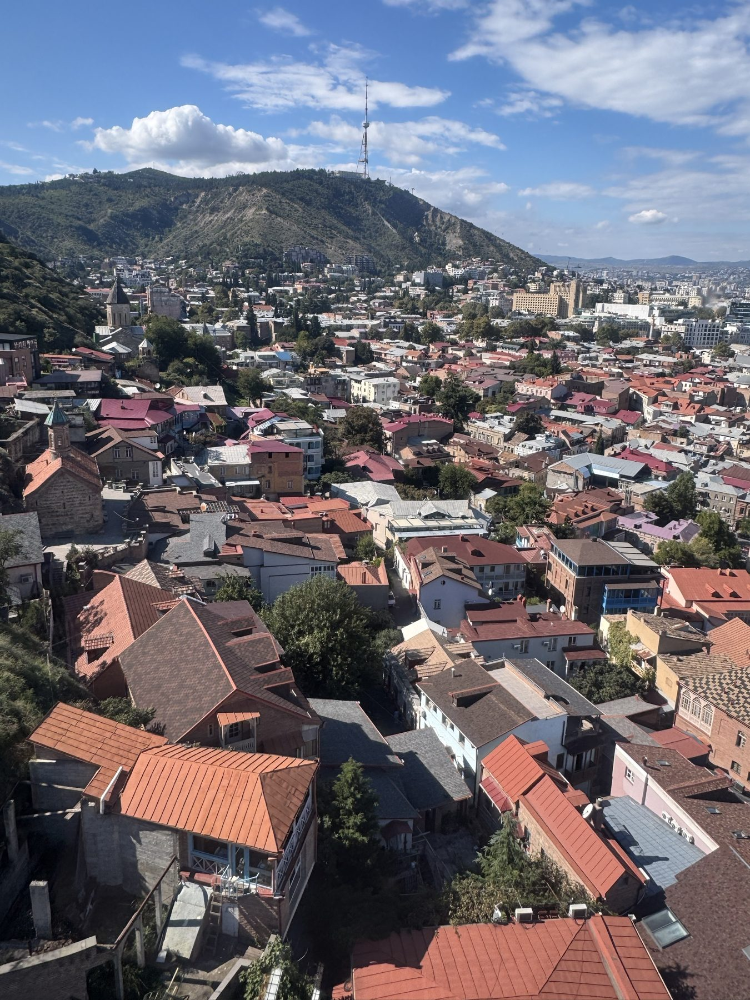
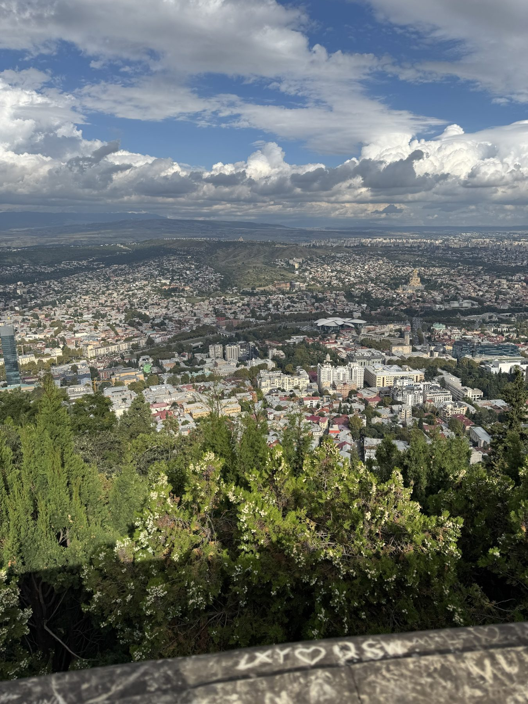
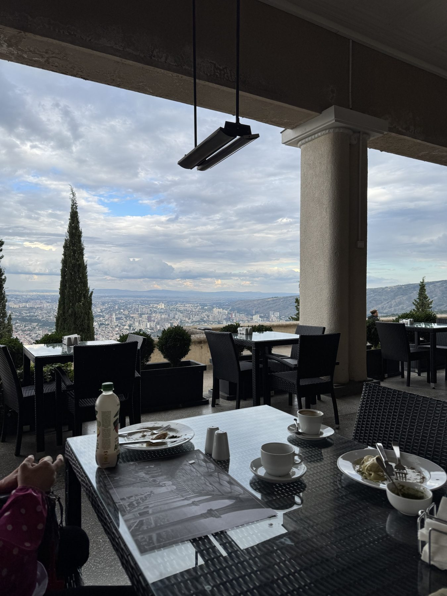

ジョージアでノマド生活
ビザ・生活費・ネット・住む場所（2026年最新）

「ジョージアでノマドってどうなの？」と、LINEやSNSでよく聞かれます。私は2026年の夏からトビリシに住み、現地で会社を作って日本食の店をやっています。このページでは、実際に暮らして分かったことと、2026年の最新の制度を合わせて、ノマドをするなら知っておきたいことをまとめました。
- 日本人はビザなしで最長1年いられる。デジタルノマドビザは不要
- 2026年1月から、入国時に旅行医療保険（3万ラリ以上）が必要
- 海外の会社・顧客のリモートワークは、2026年4月の改正で就労許可が不要になるケースあり。国内の仕事は許可が必要
- 生活費は月10〜15万円から。家賃しだいで大きく変わる
- 光回線は月30〜50ラリで100Mbps以上。オンライン会議も問題なし
1. ビザと入国：日本人はビザなしで最長1年
日本のパスポートなら、観光目的でビザなしで最長1年ジョージアに滞在できます。タイ（30日）やマレーシア（90日）と比べても長く、「まず住んでみて、合うか決める」ができるのがジョージアの一番の強みです。ほかの国との比べ方は移住先の比べ方にまとめています。
注意したいのは、2026年1月1日から、入国する旅行者は旅行医療保険への加入が必要になったことです。補償額は3万ラリ以上で、到着から出国までの期間をカバーしている必要があります。クレジットカード付帯の保険で足りるかは、補償額と期間を出発前に確認しておきましょう。
2. ノマドの仕事と就労許可（2026年の新ルール）
2026年3月から、ジョージアで働く外国人には就労許可が必要になりました。「ビザなしで1年いられる＝自由に働ける」ではなくなったのが大きな変化です。
ただし2026年4月の法改正で、海外の会社や顧客のために、ジョージア国外の事業に関わる仕事をする場合（日本の会社のリモートワーク、日本のクライアントからの受託など）は、就労許可が不要になるケースが示されました。一方で、ジョージア国内の会社や顧客の仕事をするなら許可が必要です。許可なしで働くと、本人と雇い主に2,000ラリずつの罰金が科される可能性があります。
くわしくは就労許可（2026年新制度）の解説をご覧ください。
3. ジョージアのノマド生活費（トビリシ・1人・月）
| 項目 | 節約型 | ゆとり型 |
|---|---|---|
| 家賃（1LDK） | サブルタロなど：400〜600ドル | ヴァケ・ヴェラ：600〜900ドル |
| 光熱費 | 夏の冷房：30〜60ドル | 冬のガス暖房：40〜100ドル |
| ネット・スマホ | 光回線 30〜50ラリ ／ スマホのデータ 20ラリ前後〜 | |
| コワーキング | 使わない・カフェ中心 | 月280〜700ラリ |
| 合計の目安 | 月1,700〜2,400ラリ （約10〜15万円） | 月3,000〜4,700ラリ （約18〜29万円） |
4. ノマドに住みやすいエリアと部屋探し

| エリア | こんな人に | 1LDKの家賃目安 |
|---|---|---|
| ヴェラ | 静かで歩きやすい場所に住みたい | 550〜800ドル |
| ヴァケ | 落ち着いた高級住宅街がいい | 600〜900ドル |
| サブルタロ | 家賃と便利さのバランス重視（地下鉄あり） | 400〜600ドル |
| チュグレティ（ファブリカ周辺） | ノマド仲間を作りたい | エリア内で差が大きい |
| 旧市街 | 短期で観光も楽しみたい | 500〜800ドル |
家賃はドルで提示されることが多く、敷金（デポジット）は1〜2か月分が一般的です。最初の1〜2週間は短期の宿にして、現地で部屋を見てから決めるのがおすすめです。写真と実物が違うことがあるのと、暖房の方式（ガスか電気か）で冬の光熱費が大きく変わるからです。私たちの店はサブルタロ（地下鉄 Technical University 駅の近く）にあります。
5. ネット・SIM・コワーキング
自宅の光回線は、MagtiやSilknetで月30〜50ラリ、100Mbps以上のプランがあり、工事は1〜3日ほどです。オンライン会議や動画のアップロードも問題なくできます。
スマホは、空港や市内の店でパスポートを見せれば現地のSIMが買えます。観光客向けには、20ラリで15GB（30日）といったプランがあります。
カフェでパソコン作業をする人は多く、Wi-Fiは20〜80Mbps程度です。コーヒーは1杯8〜12ラリほど。長くいるときは2時間に1回くらい追加で注文するのがマナーです。コワーキングは1日25〜50ラリ、月280〜700ラリほどで、ノマド仲間が欲しい人には「ファブリカ」が人気です。

6. お金・言葉・気候で知っておきたいこと
- お金：カード払いができる店が多いですが、小さな店やタクシーは現金のことも。現地の銀行口座を作ると家賃の支払いなどが楽になります（銀行口座の開き方）。
- 税金：個人事業主の「小規模事業者」は、年間売上50万ラリまで売上の1%が税金。ただし対象外の業種や、日本の税金との関係があります（会社設立・税金の解説）。
- 言葉：カフェや若い人には英語が通じることが多い一方、役所と銀行はジョージア語が中心です。
- 気候：冬は0度前後まで下がる日もあります。春と秋、特に10月前後が過ごしやすい季節です。
- 制度が変わるのが早い：2026年だけでも保険・就労許可・改正と大きな変更が続きました。古いブログ記事の情報には気をつけてください。
7. いきなり移住が不安なら、まず試してみる
「行ってみたいけど、一人で全部やるのは不安」という声を本当によくいただきます。そこで私たちは、トビリシで営業している店を拠点に、ノマド生活を試せる形を用意しました。
- ノマド体験：1日・1週間・月額で、店の作業席・料理教室・語学カフェ・移住相談を使えます
- トビリシ寺子屋（ジョージア・ノマド留学）：1ヶ月、本物の店の仕事を教材に、ノマドの稼ぎ方と暮らしの手続きまで学ぶ選考制のプログラム（第1期は2027年1月11日から）

8. よくある質問
これまでLINEやSNSでいただいた質問の中から、ノマドの方によく聞かれるものをまとめました。
日本人はジョージアにビザなしで何日いられますか？
日本のパスポートなら、観光目的でビザなしで最長1年滞在できます。2026年1月からは、入国の際に滞在期間をカバーする旅行医療保険（補償額3万ラリ以上）への加入が必要です。
デジタルノマドビザは必要ですか？
日本人は必要ありません。ビザなしで最長1年いられるので、多くのノマドはそのまま滞在しています。1年を超えて住む場合や、ジョージア国内の仕事をする場合は、居住許可や就労許可を考えます。
日本の会社や海外の顧客の仕事を、トビリシからリモートでしてもいいですか？
2026年4月の法改正で、海外の会社や顧客のために国外の事業に関わる仕事をする場合は、就労許可が不要になるケースが示されました。ただしジョージア国内の会社や顧客の仕事をするなら就労許可が必要です。制度が変わったばかりなので、迷ったら事前に確認してください。
ジョージアのノマド生活は月いくらかかりますか？
トビリシでは、節約型で月1,700〜2,400ラリ（約10〜15万円）、ゆとりのある暮らしで月3,000〜4,700ラリ（約18〜29万円）が目安です。一番大きいのは家賃で、エリアと家具付きかどうかで大きく変わります。
トビリシのネットは速いですか？仕事になりますか？
自宅用の光回線は月30〜50ラリ程度で100Mbps以上のプランがあり、オンライン会議も問題なくできます。カフェのWi-Fiは20〜80Mbps程度で、時間帯によって差があります。スマホは空港や市内で現地SIMが買えます。
ノマドに住みやすいエリアはどこですか？
落ち着いて暮らすならヴェラやヴァケ、家賃と便利さのバランスならサブルタロ、ノマド仲間を作りたいならコワーキングのある「ファブリカ」周辺（チュグレティ）が人気です。旧市街は観光には楽しいですが、長く住むには少しにぎやかです。
英語やジョージア語ができなくても暮らせますか？
カフェや若い人の多い場所では英語が通じることが多く、翻訳アプリがあれば日常生活は送れます。ただし役所や銀行の窓口はジョージア語が中心です。手続きだけは、分かる人と一緒に行くとスムーズです。
ジョージアで銀行口座は作れますか？
作れます。パスポートを持って銀行の窓口へ行くのが基本ですが、銀行や担当者によって対応が変わることがあります。くわしくは銀行口座の開き方のページにまとめています。
個人事業主の税金1%はノマドにも使えますか？
ジョージアで個人事業主として登録し、「小規模事業者」の認定を受けると、年間売上50万ラリまでは売上の1%が税金になります。ただし対象外の業種があり、日本の税金との関係もあるので、使う前に確認が必要です。
冬は寒いですか？
トビリシの冬は0度前後まで下がる日もあり、暖房費（ガス代）がかかります。一方で春と秋は過ごしやすく、特に10月前後はノマドに人気の季節です。
トビリシに日本人や日本食の店はありますか？
日本人はまだ多くありませんが、少しずつ増えています。私たちはトビリシで日本食の店（Japan Food Hub）をやっているので、着いたらまずごはんを食べに来てください。移住の相談もその場でどうぞ。
いきなり移住するのは不安です。まず試せますか？
試せます。1日・1週間・月額で店を拠点にノマド生活を試せる「ノマド体験」と、1ヶ月で稼ぎ方と暮らしの手続きまで学ぶ「トビリシ寺子屋」があります。まずはLINEで30分の無料相談からどうぞ。
出典
トビリシで会社と口座を自分で作り、店をやっている日本人が、日本語で答えます。初回30分の相談は無料です。LINE登録で「ジョージア移住・起業 準備リスト」もお送りしています。
LINEで無料相談する